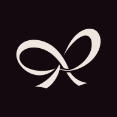
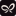
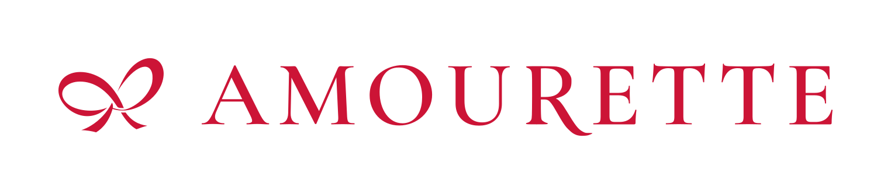
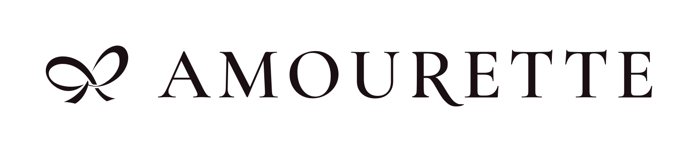

The identity, ready to use.
The selected drawings, fixed compositions and a small set of files with clear roles. Nothing here changes the app.

One identity. Different roles.

{kind=link}

{kind=link}


{kind=link}
{kind=link}

{kind=link}
Fixed colours, chosen for the surface.


Ruby also remains the public landing's generous hero treatment on velvet. In-app branding stays cream. No ruby on bordeaux or busy photos; no gradients, two-tone signatures or champagne logo.
The files already include breathing room.
x = the flat capital height of E.
Vertical ribbon width: 2.4x. Horizontal: 1.8x. Gap to the wordmark: 0.65x. These are the round 16 proportions.
Combined signatures and wordmark: 1x clear space all around. B1 alone: one quarter of its visible width.
Do not crop the padding or stretch the artwork. Backgrounds can fill this space; other graphics and text cannot. The R and optical letter spacing are unchanged.
Screen minimums, measured on the whole file.
These include the supplied padding. View at 100% zoom. Use the wordmark alone when the complete signature cannot fit.
These are screen working minimums. Printing needs a physical proof at final size: this sRGB pack is not a CMYK or paper test.
What is in the pack?
14 SVGs, 20 PNGs and 1 ICO, plus this guide, the source-font licence and a manifest with hashes and geometry. No fonts need to be installed.
The phone files are opaque squares; their rounded appearance here is only the preview mask. F1 stays exclusive to the favicon. Older drawings and comparisons remain intact.
All assets are local and work after extraction. App integration, commits, pushes, PRs and shipping remain separately authorized. Platform-specific setup and print proofs are not included.
Inspect the manifest